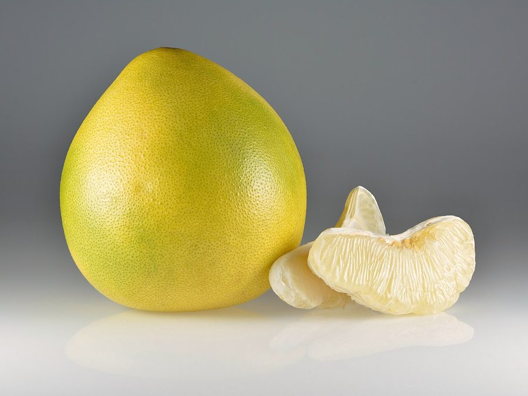

चकोतराPomelo
Citrus maxima · Rutaceae · FLR-0289

- Scientific name वैज्ञानिक नाम
- Citrus maxima (Burm.) Merr.
- Family कुल
- Rutaceae
- Hindi हिंदी
- चकोतरा
- Local names स्थानीय नाम
- chakotara, chakotra, pomelo, batavi nimbu
- Status here यहाँ की स्थिति
- cultivated
- Movement आवागमन
- Resident, here all year
- Known from कहाँ दर्ज
- Others have published records from the Basti–Ayodhya districts बस्ती–अयोध्या के ज़िलों से दूसरों के प्रकाशित अभिलेख
- IUCN IUCN
- not evaluated
- Review समीक्षा
- audited and independently read
When to look कब देखें
Present all year. साल भर मौजूद।
Uses and possibilities उपयोग और संभावनाएँ
“Traditional medicine” means a documented traditional use, not a claim that it works. Nothing on this page is medical advice.
Drawn from the documented uses in the profile below, where each is labelled traditional, current or a research lead. All uses →
चकोतरा / Pomelo
Citrus maxima (Burm.) Merr. — Rutaceae
चकोतरा — एक बड़ा, ताज़गी वाला फल जो नारंगी और अमरूद के बीच कहीं होता है। पेड़ गेहुँ-रंग के सुगंधित फूल लगाता है। फल बहुत बड़ा, गोल, हरा-पीला या सुनहरा होता है और कई महीनों तक खेतों में रह सकता है। गूदा गुलाबी या सफेद होता है, मीठा, खट्टा और रसीला होता है। यह पेड़ बहुत ताक़तवर और लंबा होता है, शहर के बाग़ों और पुराने गाँवों के मंदिरों के आँगन में मिलता है।
Quick Identification त्वरित पहचान
| Feature | Description |
|---|---|
| Form | Evergreen tree, 5–10 m tall, dense, spreading canopy, upright trunk |
| Leaves | Alternate, simple, 10–15 cm, lanceolate, glossy dark green, aromatic when crushed |
| Flowers | White or pale pink, fragrant, 2–3 cm diameter, in small clusters |
| Fruit | Large, globose or slightly pear-shaped, 10–20 cm diameter, pale yellow or green, very large |
| Rind | Thick, 1–2 cm, bumpy, pale yellow or whitish when mature; segments visible through the skin |
| Pulp | Pink, white, or pale red; juicy, sweet-tart, firm-walled cells |
Field tip: A large, robust evergreen tree with glossy, aromatic leaves and large pale-colored fragrant flowers. The massive, thick-skinned fruit develops on the outer branches. Fruits mature in winter and can persist on the tree for months.
हिंदी — कैसे पहचानें: बड़ा, मजबूत पेड़, चमकदार पत्तियाँ। सफेद सुगंधित फूल। फल बहुत बड़ा, भारी, हरा-पीला, मोटी खाल वाला।
Morphology आकारिकी
Biometrics (measurements for pomelo in homestead gardens of northern India):
| Measurement | Range |
|---|---|
| Tree height | 5–10 m |
| Trunk diameter | 30–80 cm |
| Leaf length | 10–15 cm |
| Leaf width | 4–6 cm |
| Flower diameter | 2–3 cm |
| Fruit diameter | 10–20 cm |
| Fruit weight | 1–3 kg |
Trunk and branches: Erect, stout, with thorns at the bases of young leaves. Wood is pale yellow, moderately hard.
Leaves: Alternate, simple, lanceolate, with prominent veining, aromatic. The petiole (leaf stalk) is slightly winged.
Flowers: Regular, fragrant, white or pale pink, with five petals and numerous stamens. Pollinated by bees.
Fruit: A hesperidium (berry), the largest of the citrus fruits, globose or slightly pear-shaped, 10–20 cm in diameter, weighing 1–3 kg. The rind is thick (1–2 cm), bumpy, pale yellow or white when ripe. The endocarp (white membrane) is thick. The flesh is divided into segments, juicy, pink, white, or pale red, sweet and tangy.
हिंदी: मजबूत तना, काँटे। चमकदार पत्तियाँ, सुगंधित। बड़ा, भारी फल, मोटी खाल, गुलाबी या सफेद गूदा।
Behaviour & Ecology व्यवहार और पारिस्थितिकी
A long-lived evergreen tree native to Southeast Asia, cultivated in tropical and subtropical regions for its large, sweet fruit. Citrus maxima is slower-growing and hardier than lime or lemon, tolerating poor soils and occasional drought. The tree flowers in late winter and spring, producing fragrant white or pale pink flowers visited by bees. Fruit development takes 8–10 months, and mature fruits can hang on the tree for months, improving in flavor. The thick rind protects the fruit from sun damage and allows extended storage. In cultivation, the tree can live over 50 years and often grows into a large, shade-providing canopy. Fallen fruits are occasionally taken by birds and small mammals for their juice.
हिंदी: धीमे-धीमे बढ़ता है, लंबा जीवन काल। सुगंधित फूल, सर्दी में। फल 8-10 महीने में तैयार, मोटी खाल से सुरक्षित। बहुत बड़ा, छायादार पेड़ बन जाता है।
Life Cycle / Phenology जीवन चक्र
| Month / Season | Event |
|---|---|
| January–March | Flowering; fragrant white flowers on the tree |
| March–May | Young fruit development; fruit swelling begins |
| June–September | Rapid fruit growth during monsoon moisture |
| September–November | Fruit growth slowing; color change to yellow-green |
| November–February | Fruit ripens; optimal flavor and sugar content; harvest period |
A tree reaches fruiting maturity in 5–8 years from a grafted sapling. Fruit can remain on the tree for 2–3 months, improving in sweetness.
हिंदी: जनवरी-मार्च में फूल, मई से फल बढ़ना शुरू, नवंबर-फरवरी में पका फल, कटाई।
Associated Species / Interactions संबंधित प्रजातियाँ
- Pollinator visitors: Asian Honey Bee and Giant Honey Bee visit the fragrant flowers.
- Garden companions: Often planted near Mango, Guava, and lemon in homestead orchards.
- Fruit dispersal: Fallen ripe fruits are occasionally eaten by birds; seeds rarely survive fermentation.
- Understory growth: In older orchards, Neem and drumstick trees provide companion shade.
Pests and Diseases कीट और रोग
- Leaf-eating caterpillars: Rarely, citrus leaf rollers and sawfly larvae defoliate young shoots; damage is usually light.
- Scale insects: Hemipterous scale insects may infest the trunk and branches; neem oil spray provides control.
- Citrus canker: A bacterial disease causing raised, corky lesions on leaves and fruit; rare in northern India.
- Fruit rot: Alternaria and Fusarium cause rind decay in high-humidity, poor-drainage conditions.
- Root rot: In waterlogged soils, root rot can kill young trees; well-drained soil is essential.
Agricultural / Human Relevance कृषि प्रासंगिकता
Fruit use: The fruit is eaten fresh by cutting the thick rind and separating the segments. The flesh is juicy, mildly sweet, and slightly tart. The fruit is also made into juice, jam, or marmalade. In some regions, the rind is candied as a sweet.
Nutritional value: Pomelo is rich in vitamin C, fiber, and antioxidants. It is lower in acid than lemon or lime and is easier to digest.
Cultivation: The tree grows well on alluvial soils with good drainage. It requires moderate watering and occasional pruning to maintain shape. Propagation is by grafting (preferred for quality fruit) or from seed (though seed-grown trees take longer to fruit and may produce variable fruit quality).
Traditional uses: The aromatic leaves are sometimes used in traditional medicine for their mild stimulant and digestive properties.
हिंदी: फल बहुत बड़ा, मीठा, रसीला। विटामिन सी और फाइबर से भरपूर। बहुत समय तक रखा जा सकता है। पेड़ अंदाज़े से लंबा और छायादार होता है।
Expected Locally स्थानीय रूप से अपेक्षित
Not a field record. Written from published accounts for eastern Uttar Pradesh. No confirmed local sighting yet — if you have seen it, that is what the atlas needs.
अभी तक स्थानीय पुष्टि नहीं। यह विवरण प्रकाशित स्रोतों से है, किसी अवलोकन से नहीं।
Pomelo is to be expected as a cultivated tree in homestead gardens and old orchards throughout Basti district, particularly around temples and large villages. GBIF holds published records from the core districts. The tree is grown for its large, long-keeping fruit and is visible year-round, flowering in spring and bearing mature fruit in winter.
Distribution वितरण
Global range: Native to Southeast Asia, particularly Malaysia and Indonesia; now cultivated in tropical and warm subtropical regions worldwide.
In India: Cultivated mainly in southern and central India; increasingly grown in homestead gardens in northern India.
In Uttar Pradesh: Found in homestead orchards and temple gardens throughout the state.
In Basti district / eastern UP: Present in older homestead gardens and village orchards; records from core districts.
Research Questions शोध प्रश्न
Anyone can investigate these | कोई भी इन प्रश्नों की जाँच कर सकता है
- How many fruits does a mature pomelo tree produce in one year, and what is the average weight of each fruit? / एक पेड़ एक साल में कितने फल देता है? — Mark and count fruits on a tree over a year.
- How long can a ripe pomelo fruit be stored in a cool place without spoiling, and does the flavor change with storage? / चकोतरा को कितने दिन रख सकते हैं? — Store fruits; taste at intervals; check for rot.
- What is the sugar content and acidity of pomelo fruit compared to orange or lemon grown in the same garden? — Collect fruits; taste; compare juiciness and sweetness.
- Do bees visit pomelo flowers more frequently than lemon or guava flowers in the same village? — Observe flowering trees; count bee visits.
- Can a pomelo seedling grow faster with grafting than from seed, and what is the difference in time to first fruiting? / क्या कलम से लगाए पेड़ बीज से अधिक तेज़ी से फल देते हैं? — Grow both; compare growth and fruiting age.
Similar Species मिलती-जुलती प्रजातियाँ
| Species | How to tell apart | हिंदी |
|---|---|---|
| Orange (Citrus ×aurantium) | Smaller fruit (7–10 cm), thinner rind, orange color, smaller tree | नारंगी — छोटा फल, पतली खाल, नारंगी रंग |
| Lemon (Citrus limon) | Much smaller fruit (5–8 cm), yellow, more acidic, thinner rind | नींबू — बहुत छोटा, पीला, खट्टा, पतली खाल |
| Grapefruit (Citrus ×paradisi) | Smaller than pomelo (7–12 cm), usually pink flesh, more bitter | ग्रेपफ्रूट — छोटा, गुलाबी गूदा, कड़वा |
Field rule: The largest citrus fruit in the district, with thick bumpy pale yellow rind, thick white membranes, pink or white sweet-tart flesh, and fragrant white flowers. Hangs long on the tree in winter.
Taxonomy & Classification वर्गीकरण
Original description. Originally described by Johannes Burman in 1768 as Citrus maxima. The genus name Citrus is the classical Latin name for citrus fruits. The specific epithet maxima means "largest," referring to the fruit size.
Subspecies. Monotypic — no subspecies are currently recognised.
Family and order placement. Rutaceae, order Sapindales. Related to all other citrus species (Citrus genus).
Phylogenetic notes. Citrus maxima is one of the primary species of citrus, along with C. medica (citron) and C. aurantium (bitter orange). Most modern citrus hybrids are derived from these three parent species. Molecular evidence places C. maxima as a basal member of the Citrus clade.
IUCN status rationale. Not evaluated. Widely cultivated; no conservation concern.
Photo Gallery फोटो गैलरी
Photos needed आवश्यक फोटो
- [ ] Whole tree in a homestead garden (पूरा पेड़)
- [ ] Fragrant white flowers at flowering (फूल)
- [ ] Large ripe fruit on the branch showing thick bumpy rind (पका फल)
No photos yet — add field photos to media/species/pomelo/ and run node scripts/sync_photos.js.
References संदर्भ
- Burman, J. (1768). Flora Indica. Amsterdam.
- Merrill, E.D. (1939). An Enumeration of Philippine Flowering Plants, Vol. 3. Bureau of Printing, Manila.
- Hooker, J.D. (1875). Flora of British India, Vol. 1. L. Reeve & Co., London.
- Kirtikar, K.R. & Basu, B.D. (1935). Indian Medicinal Plants, 2nd ed., Vol. 1. Lalit Mohan Basu, Allahabad.
- Botanical Survey of India (2013). State Flora Series: Flora of Uttar Pradesh. BSI, Kolkata.
- GBIF Occurrence Data — Citrus maxima, India (2020–2026).
Source file: species/flora/trees/pomelo.md